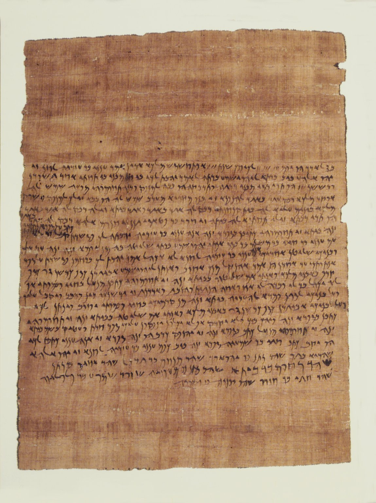

Elephantine Papyri

Aramaic letters and legal documents from a Jewish military colony on Egypt's southern frontier, first acquired in 1893 and excavated by Otto Rubensohn in 1906–08. The Jews of Elephantine had their own temple to Yahweh (Yahu), kept Passover by order of the Persian king Darius II (419 BC), and wrote to Jerusalem begging help to rebuild their temple after Egyptian priests destroyed it in 410 BC.
Biblical Significance
Long after the exile, Jews in Egypt were still keeping Passover, still writing to Jerusalem, still worshipping the God of their fathers far from home. Their letters are the everyday faith of the diaspora — marriages, debts, festivals, and a burned temple — the same scattered people Jeremiah had warned and the psalmists had wept for.
Interpretations
Scholars agree the papyri are genuine fifth-century documents of a Jewish colony with its own Yahweh temple; debate concerns how the colony reconciled its temple with Jerusalem’s claims.